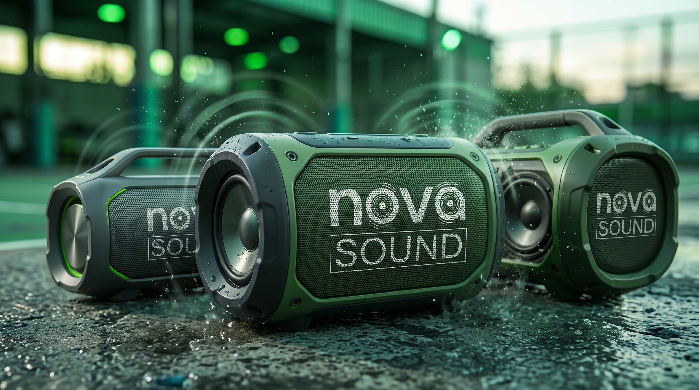

<!doctype html>
<html lang="es">
<head>
  <meta charset="utf-8">
  <meta name="viewport" content="width=device-width, initial-scale=1">
  <title>Iniciar sesión · Nova Sound</title>
  <script src="js/vendor/tailwindcss-browser.js"></script>
</head>
<body class="lg:grid lg:min-h-screen lg:grid-cols-[3fr_2fr]">
  <!-- Mitad con imagen (solo en pantallas grandes). Para cambiar la foto, reemplaza img/login.jpg -->
       <aside class="relative hidden overflow-hidden bg-marca-negro lg:sticky lg:top-0 lg:block lg:h-screen">
       <!-- Fondo: la misma foto desenfocada, para que no queden franjas vacías -->
       
       <!-- Foto completa (se ven las 3 bocinas), centrada y fundida arriba y abajo -->
       <div class="absolute inset-0 flex items-center">
         
       </div>
       <div class="absolute inset-0 bg-linear-to-t from-marca-negro/80 via-transparent to-marca-negro/40"></div>
    <p class="absolute bottom-8 left-8 right-8 text-lg font-semibold text-white">Control de producción, calidad y embarques</p>
  </aside>

  <!-- Mitad con el formulario -->
  <main id="contenido" class="degradado-marca flex min-h-screen items-center justify-center bg-marca px-6 py-8"></main>
  <script type="module" src="js/pantallas/login.js"></script>
</body>
</html>